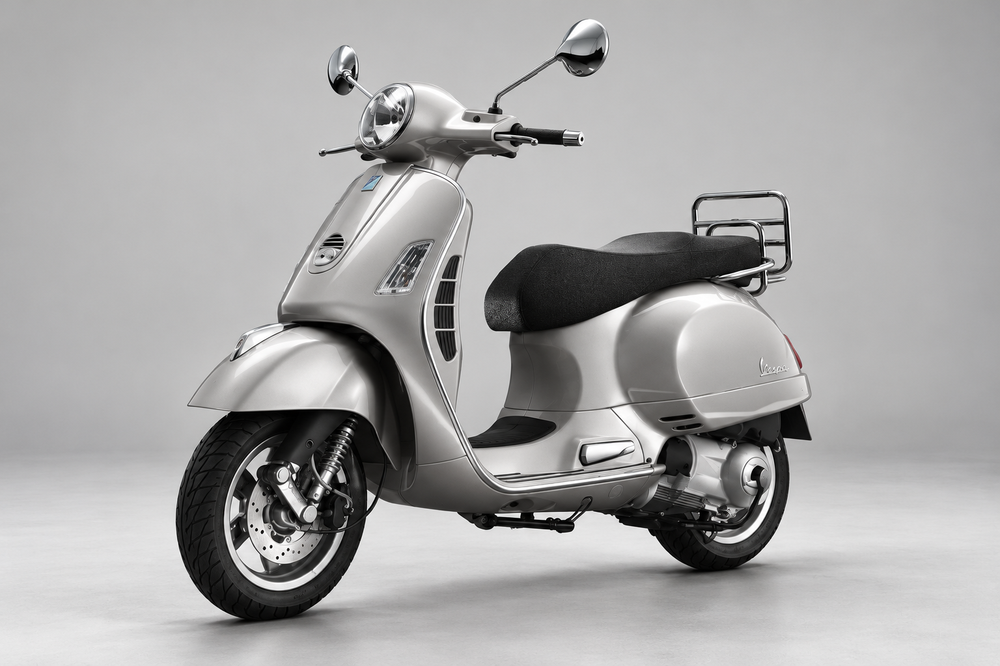

Inside the machine
Concept prototype · not a 3D modelMeet the GTS 125.
Explore two visible components on an independently generated reference illustration.

Illustration · AI-generated reference study · configuration and geometry not verified
For design review only · no repair or fitment claims